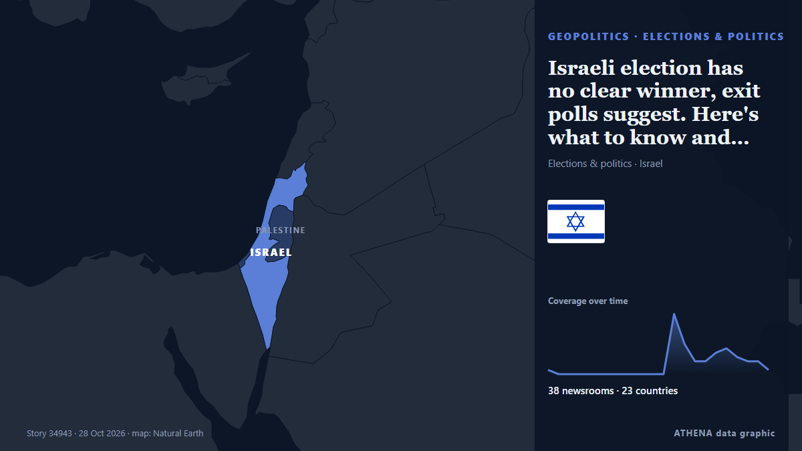

Israeli election has no clear winner, exit polls suggest. Here's what to know and what's likely next

Israelis appear to have handed a rebuke to Prime Minister Benjamin Netanyahu in national elections, but what's next is uncertain as. de Mainichi (English)
Informado de forma independiente por 38 medios de 23 países desde el 26 oct; el primero fue AzerNews; la cobertura va perdiendo fuerza. ATHENA califica el riesgo como moderado (2.9/10), sobre todo por la gravedad del daño descrito y su alcance geográfico y sectorial. La confianza es del 89 % (alta): lo corroboran 38 medios independientes, con una fiabilidad media de las fuentes del 75 %. Medios por país: Reino Unido (6), India (5), Estados Unidos (4). Cobertura: del 26 oct al 28 oct, 36 horas.
Por qué importa: Los hechos de seguridad y diplomacia pueden alterar alianzas, comercio y mercados mucho más allá de los países implicados.
Qué ha cambiado: 49 informaciones nuevas de 38 redacciones en las 24 horas hasta el 28 oct.
Primer titular: Israel election: Exit polls show no clear winner as Netanyahu’s fate hangs in balance
Los titulares se muestran en inglés, tal como se publicaron.
De un vistazo
Seleccionado, puntuado y redactado por la metodología publicada de ATHENA. Ningún editor interviene en eventos concretos. Cómo se elabora ›
| 26 Oct 18:40 UTC | 1 |
|---|---|
| 26 Oct 20:40 UTC | 0 |
| 26 Oct 22:40 UTC | 0 |
| 27 Oct 00:40 UTC | 0 |
| 27 Oct 02:40 UTC | 0 |
| 27 Oct 04:40 UTC | 0 |
| 27 Oct 06:40 UTC | 0 |
| 27 Oct 08:40 UTC | 0 |
| 27 Oct 10:40 UTC | 0 |
| 27 Oct 12:40 UTC | 0 |
| 27 Oct 14:40 UTC | 0 |
| 27 Oct 16:40 UTC | 0 |
| 27 Oct 18:40 UTC | 14 |
| 27 Oct 20:40 UTC | 7 |
| 27 Oct 22:40 UTC | 3 |
| 28 Oct 00:40 UTC | 3 |
| 28 Oct 02:40 UTC | 5 |
| 28 Oct 04:40 UTC | 6 |
| 28 Oct 06:40 UTC | 4 |
| 28 Oct 08:40 UTC | 3 |
| 28 Oct 10:40 UTC | 3 |
| 28 Oct 12:40 UTC | 1 |
| 26 Oct 18:44 UTC | 0.0 |
|---|---|
| 27 Oct 20:17 UTC | 2.2 |
| 27 Oct 22:19 UTC | 0.0 |
| 27 Oct 23:01 UTC | 2.2 |
| 28 Oct 04:46 UTC | 3.5 |
| 30 Oct 12:32 UTC | 2.9 |
| 30 Oct 12:32 UTC | 2.9 |
Por qué estas cifras
Importancia
Riesgo
Confianza
La cobertura: quién informó y cuándo
titular tal como se publicó · abre el original- AzerNews · AzerbaiyánNetanyahu said to cancel party event amid security matters
- to vima · GreciaIsrael Election Exit Polls: Eisenkot Bloc ‘Leads’ Netanyahu
- Irish Examiner · IrlandaNo clear winner in Israeli election, exit polls suggest
- The Irish News (Belfast) · Reino UnidoNo clear winner in Israeli election, exit polls suggest
- Belfast Telegraph · Reino UnidoNo clear winner in Israeli election, exit polls suggest
- Euronews English · FranciaIsrael election: Netanyahu bloc leads with more than half of votes counted but short of majority
- PBS NewsHour · Estados UnidosNo clear winner in Israeli election, exit polls indicate, as Netanyahu's fate hangs in the balance
- Gulf News · Emiratos Árabes UnidosIsrael election: Exit polls show no clear winner as Netanyahu’s fate hangs in balance
- Al Jazeera English · CatarExit polls signal blow for Netanyahu but no clear winner in Israel election
- DW English · AlemaniaIsrael election: Exit polls show no clear winner, with Netanyahu's fate unclear
- Times of India · IndiaIsrael election deadlock: Netanyahu, Eisenkot blocs tied in revised exit polls
- The Rio Times · BrasilNetanyahu’s Party Odds Jump on Exit Polls
- Anadolu Agency (English) · TurquíaNo clear winner emerges in Israeli parliamentary elections: First exit polls
- Arab Times · KuwaitIsrael Exit Polls Show No Clear Winner as Netanyahu Bloc Trails Eisenkot’s Camp
- TheJournal.ie · IrlandaNo clear winner in Israeli election, exit polls suggest
- Kurdistan24 (English) · IrakWhat Do Israel’s Exit Polls Show for Netanyahu and Opposition?
- ProtoThema English ·Israel election cliffhanger: Netanyahu’s Likud comes first, but Eisenkot claims mandate for change as exit polls point to deadlock
- CBS News (World) · Estados UnidosNo clear winner in Israeli election as negotiations to follow
- The Irish News (Belfast) · Reino UnidoVoters deliver rebuke to Netanyahu but no clear winner in Israel’s election
- Belfast Telegraph · Reino UnidoVoters deliver rebuke to Netanyahu but no clear winner in Israel’s election
- Irish Examiner · IrlandaExit poll for Israel election shows no clear winner
- Mainichi (English) · JapónExit polls suggest a rebuke of Netanyahu but no clear winner in Israel's election
- PBS NewsHour · Estados UnidosProjections show no clear winner in Israel's election
- BBC News · Reino UnidoWatch: What happens now after close vote in Israeli election?
- Greek City Times · GreciaIsraeli Exit Polls Show No Clear Winner as Arab Parties Make Gains
- Al Jazeera English · CatarArab parties on track to win record seats in Israel election, polls show
- NDTV · IndiaNetanyahu's Bloc Ahead Of Opposition, But Falls Short Of Majority: Exit Polls
- CNBC World · Estados UnidosIsraeli bonds, shekel fall as election leaves Netanyahu and others short of majorities
- SBS News · Australia'Anything could happen': How a victor could emerge from Israel's election
- Arab News · Arabia SaudíExit polls suggest no clear winner in Israel’s election, but Netanyahu is far from defeated
- ABC News Australia · AustraliaNetanyahu and opposition face close fight in Israeli election with no clear winner
- Scroll.in · IndiaIsrael elections: Benjamin Netanyahu’s bloc leads, but short of majority
- Times of India · IndiaIsrael election results: With no clear majority in sight, what could happen next?
- Korea Herald · Corea del SurNo Israel winner, but Netanyahu not defeated
- Arab News · Arabia SaudíIsrael’s elections: What happens next?
- Indian Express · IndiaIsrael Election Results 2026 LIVE Updates: Netanyahu bloc leads with 53 seats as Eisenkot-led opposition trails at 48
- Mainichi (English) · JapónIsraeli election has no clear winner, exit polls suggest. Here's what to know and what's likely next
- Khaama Press · AfganistánNetanyahu, Eisenkot Vie to Form Government After Deadlocked Israel Election
- The Independent · Reino UnidoIsrael exit polls show no clear winner in 2026 elections. What happens next?
- SABC News · SudáfricaNetanyahu and Eisenkot deadlocked according to exit polls